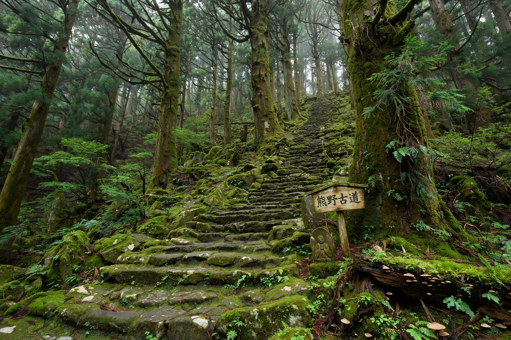

| Kumano Kodō | |
|---|---|
| Location | Kii Peninsula, Japan (Wakayama, Mie, Nara) |
| Type | Pilgrimage routes network |
| Principal shrines | Kumano Hongū Taisha; Kumano Hayatama Taisha; Kumano Nachi Taisha |
| UNESCO | World Heritage Site (2004), part of "Sacred Sites and Pilgrimage Routes in the Kii Mountain Range" |
The Kumano Kodō (熊野古道, "Old Roads of Kumano") is a network of ancient pilgrimage routes crossing the mountainous Kii Peninsula of Honshu, Japan, connecting the cities of Kyoto, Osaka and Ise with the Three Grand Shrines of Kumano (Kumano Sanzan): Hongū Taisha, Hayatama Taisha and Nachi Taisha. For over a thousand years pilgrims — from retired emperors and aristocrats to commoners, including women excluded from other sacred mountains — walked these routes, earning Kumano the epithet of a "pilgrimage of ants" for the processions seen on its passes.
The main routes are the Nakahechi (the imperial route from Kyoto via Tanabe, the most popular and best preserved), the Kohechi (mountain route linking Mount Kōya with Hongū), the Ōhechi (coastal route), the Iseji (linking the Ise Grand Shrine with Kumano), and the rugged Ōmine Okugakemichi used by Shugendō ascetics. Along the way stand the 99 Ōji shrines — subsidiary shrines that sheltered and guided pilgrims — as well as stone-paved passes (tōge), tea houses and ichirizuka milestones. Nachi Taisha is famed for its vermilion pagoda and Seiganto-ji temple against the Nachi Falls, Japan's tallest single-drop waterfall (133 m).
Kumano became an imperial pilgrimage destination in the 11th–12th centuries — the retired Emperor Go-Shirakawa made the journey 34 times — within a syncretic Shinto-Buddhist tradition in which the mountains were seen as a Pure Land on earth. Pilgrimage flourished in the Edo period among common folk. In 2004 UNESCO inscribed the routes as part of the World Heritage Site "Sacred Sites and Pilgrimage Routes in the Kii Mountain Range". The Kumano Kodō is one of only two pilgrimage route networks in the world with World Heritage status, alongside the Routes of Santiago de Compostela; the two are twinned in a "Dual Pilgrim" programme rewarding walkers who complete both.